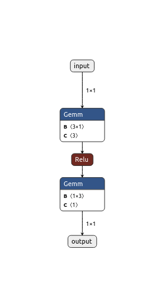

20. ONNX#
In our examples, we rely on PyTorch’s statedict, making our methods usable
only for PyTorch models. However, we aim to extend our approach to
ONNX files. ONNX is an open format for representing machine
learning models, supported by most major frameworks. By using ONNX files as the
starting point, we gain compatibility with a broad range of frameworks.
This notebook is still a work in progress, and uses some hardcoded assumptions.
20.1. Creating a neural network#
We’ll start from the neural network from the integral example:
import torch
import torch.onnx
import onnx
import numpy as np
import utils.nn as nn
import utils.duckdb as db
import matplotlib.pyplot as plt
torch.manual_seed(110033);
def f(x):
if x < 0:
return 0
elif 0 <= x < 5:
return x
elif 5 <= x < 10:
return 10-x
else:
return 0
x_train = np.linspace(-5, 15, 1000)
y_train = np.array([f(x) for x in x_train])
model = nn.ReLUFNN(input_size=1, output_size=1, hidden_size=3, num_hidden_layers=1)
nn.train(model, x_train, y_train, save_path="models/onnx.pt")
We can then export this model to ONNX:
dummy_input = torch.randn(1, 1) # A dummy input for the export
onnx_path = "simple_nn.onnx"
torch.onnx.export(model, dummy_input, onnx_path, input_names=['input'], output_names=['output'])
Note that - for now - we are explicitly passing the input and output names from PyTorch. We need to adapt this code to be more generic.
20.2. Extracting the neural network from an ONNX file#
Now that we have a trained neural network as an ONNX file, let’s see if we can extract it in some way so that we can put the network in a database.
We can use netron to look at the generated ONNX graph.
# Uncomment to launch a browser with Netron
#import netron
#netron.start('simple_nn.onnx', 8081)
Running netron yields the following ONNX graph:

By inspecting the matrix multiplications, we can retrieve the values of the weights and biases. The following code is an initial, hardcoded, proof of concept, as it relies on the names given to the values in PyTorch and assumes only one hidden layer. In later iterations, we’ll generalize this.
model.state_dict()
OrderedDict([('linear_relu_stack.0.weight',
tensor([[-0.3499],
[-0.6916],
[-1.4708]])),
('linear_relu_stack.0.bias',
tensor([ 3.4990e+00, 3.4577e+00, -1.6059e-05])),
('linear_relu_stack.2.weight',
tensor([[ 2.8579, -2.8920, 0.6799]])),
('linear_relu_stack.2.bias', tensor([2.4417e-05]))])
onnx_model = onnx.load(onnx_path)
try:
input_dims = onnx_model.graph.input[0].type.tensor_type.shape.dim[0].dim_value
output_dims = onnx_model.graph.output[0].type.tensor_type.shape.dim[0].dim_value
except:
raise Exception("Could not determine input/output dimensions from ONXX model")
if input_dims != 1 or output_dims != 1:
raise Exception("Input and output dimensions are expected to be 1")
# Note: our approach to extract the weights and biases from the network assumes
# the hidden layer is named "hidden" and the output layer is named "output".
# This is not necessarily always the case.
def find_initializer_by_name(model, initializer_name):
for initializer in model.graph.initializer:
if initializer.name == initializer_name:
return initializer
return None
# hidden.weight, hidden.bias, output.weight, output.bias
def find_values_by_initializer_name(model, initializer_name):
initializer = find_initializer_by_name(model, initializer_name)
if not initializer:
return None
return onnx.numpy_helper.to_array(initializer)
hidden_weights = find_values_by_initializer_name(onnx_model, "linear_relu_stack.0.weight")
hidden_biases = find_values_by_initializer_name(onnx_model, "linear_relu_stack.0.bias")
output_weights = find_values_by_initializer_name(onnx_model, "linear_relu_stack.2.weight")
output_biases = find_values_by_initializer_name(onnx_model, "linear_relu_stack.2.bias")
We can use the weights and biases to reconstruct the state dict:
state_dict = {
'linear_relu_stack.0.weight': torch.tensor(hidden_weights, dtype=torch.float32),
'linear_relu_stack.0.bias': torch.tensor(hidden_biases, dtype=torch.float32),
'linear_relu_stack.2.weight': torch.tensor(output_weights, dtype=torch.float32),
'linear_relu_stack.2.bias': torch.tensor(output_biases, dtype=torch.float32),
}
Let’s load this state_dict into a database.
db.load_state_dict_into_db(state_dict)
We’ll use our eval function to see if
things are working as expected.
def eval_nn(input_value):
input_clauses = []
for input_set, input in enumerate(input_value):
for i,_ in enumerate(input):
input_clauses.append(f"""
SELECT
{input_set} AS input_set_id,
{i + 1} AS input_node_idx,
? AS input_value
""")
query = f"""
WITH RECURSIVE input_values AS (
{" UNION ".join(input_clauses)}
),
input_nodes AS (
SELECT
id,
bias,
ROW_NUMBER() OVER (ORDER BY id) AS input_node_idx
FROM node
WHERE id NOT IN
(SELECT dst FROM edge)
),
output_nodes AS (
SELECT id
FROM node
WHERE id NOT IN
(SELECT src FROM edge)
),
tx AS (
-- Base case (t1)
SELECT
v.input_set_id AS input_set_id,
GREATEST(
0,
n.bias + SUM(e.weight * v.input_value)
) AS value,
e.dst AS id
FROM edge e
JOIN input_nodes i ON i.id = e.src
JOIN node n ON e.dst = n.id
JOIN input_values v ON i.input_node_idx = v.input_node_idx
GROUP BY e.dst, n.bias, v.input_set_id
UNION ALL
-- Recursive case
SELECT
tx.input_set_id AS input_set_id,
GREATEST(
0,
n.bias + SUM(e.weight * tx.value)
) AS value,
e.dst AS id
FROM edge e
JOIN tx ON tx.id = e.src
JOIN node n ON e.dst = n.id
GROUP BY e.dst, n.bias, tx.input_set_id
),
-- As the last step, repeat the calculation for the output nodes, but omit the
-- ReLU this time (per definition)
t_out AS (
SELECT
tx.input_set_id AS input_set_id,
n.bias + SUM(e.weight * tx.value) AS value,
e.dst AS output_node_id
FROM edge e
JOIN output_nodes o ON e.dst = o.id
JOIN node n ON o.id = n.id
JOIN tx ON tx.id = e.src
GROUP BY e.dst, n.bias, tx.input_set_id
)
SELECT * FROM t_out ORDER BY input_set_id, output_node_id;
"""
args = []
for input_set in input_value:
for value in input_set:
args.append(value)
results = [[] for _ in range(0, len(input_value))]
for row in db.con.execute(query, args).fetchall():
(input_set_id, output, output_node_id) = row
results[input_set_id].append(output)
return np.array(results)
# Since we are evaluating a lot of points in 1 query, increase our limits
db.con.execute("SET max_expression_depth TO 1100")
with torch.no_grad():
model.eval()
y_model = model(torch.tensor(x_train, dtype=torch.float32).unsqueeze(1)).detach().numpy()
y_sql = eval_nn(np.expand_dims(x_train, axis=1))
plt.plot(x_train, y_model, 'r', label='Neural Network output')
plt.plot(x_train, y_sql, 'b', label='SQL query eval output')
plt.legend()
plt.show()
As we can see, our methods still work, even though we started from an ONNX file.
20.3. Conclusion#
We can read all the weights and biases from an ONNX file, store these in a database, and run our queries on them. There is no need for a hard dependency on PyTorch.
We still need to work on generalizing the parsing of the ONNX file, since it still relies on hardcoded assumptions.